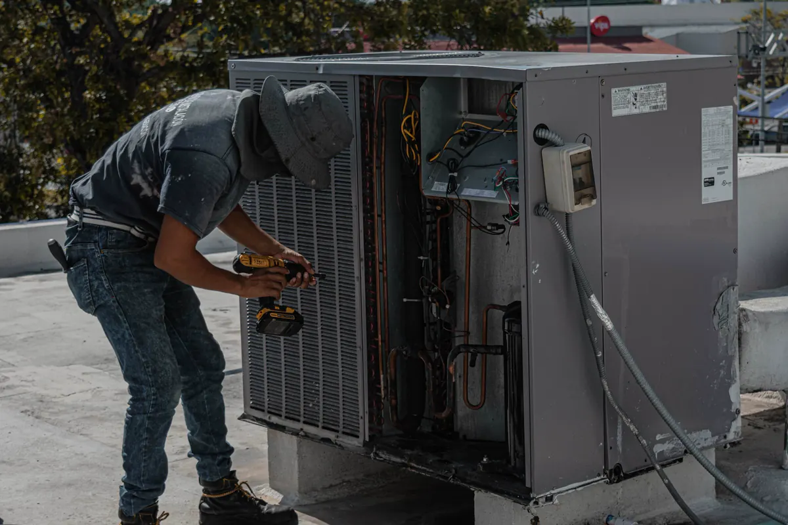
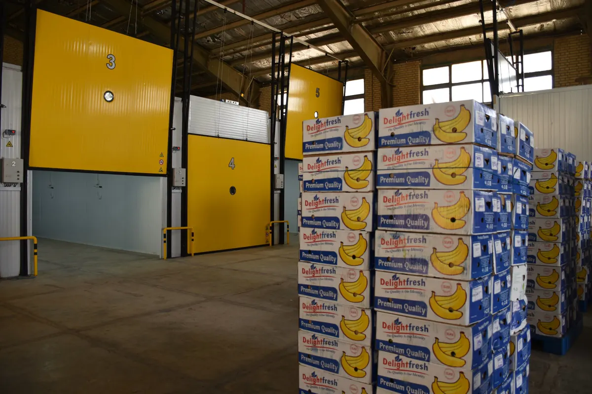

Esta página é para quem já tem a câmara e ela está dando problema — ou para quem quer parar de apagar incêndio e montar um contrato preventivo. Projeto e montagem de câmara nova estão em projeto e execução de câmara fria; o dimensionamento específico por segmento está em câmara fria para restaurante e em câmara fria para açougue e supermercado; e o que compõe o investimento de uma câmara nova está em quanto custa uma câmara fria. Aqui o assunto é diagnóstico, conserto e manutenção de instalação existente.
Câmara fria com problema: por onde começa o diagnóstico
Quase toda chamada chega com a mesma frase: “a câmara não está gelando”. O sintoma é um só, mas as causas são muitas, e boa parte delas não está no compressor. Trocar peça por tentativa custa caro e, muitas vezes, só adia a próxima parada — com produto dentro.
O diagnóstico começa pelo que o operador viu: desde quando, em que horário, com a porta aberta ou fechada, se houve entrada grande de mercadoria, se o alarme disparou, se havia gelo ou água no piso. Depois vem a medição: pressões de alta e de baixa, temperaturas de linha, superaquecimento e sub-resfriamento, corrente do compressor e dos ventiladores, temperatura do ar na entrada e na saída do evaporador. Com esses números lado a lado, a causa costuma aparecer sem adivinhação.
Sintomas mais comuns e o que se verifica em cada um
Não atinge a temperatura de trabalho
Verifica-se carga de fluido e sinais de vazamento (óleo em conexões, pressão de sucção baixa, superaquecimento alto), sujeira ou obstrução na condensadora, ventilador parado, evaporador bloqueado por gelo e a própria carga de produto: câmara projetada para receber mercadoria resfriada não dá conta de produto que entra quente.
Temperatura oscilando ao longo do dia
Posição e aferição do sensor, diferencial do controlador mal ajustado, porta aberta por tempo longo nos picos de movimento, cortina de ar ou de lâminas danificada e degelo entrando em horário de maior uso. Oscilação também forma condensado na embalagem, o que já é problema de qualidade do produto.
Compressor não desliga
Condensadora suja, fluido abaixo da carga, vedação comprometida deixando ar quente entrar, isolamento do painel degradado e setpoint abaixo do que o equipamento consegue entregar. Um compressor sem descanso aquece, desgasta mais rápido e empurra a conta de energia para cima.
Gelo no evaporador
Gelo acumulado indica umidade entrando ou degelo que não completa o ciclo. Verifica-se resistência de degelo, termostato ou sonda de fim de degelo, programação de frequência e duração, ventiladores do evaporador, vedação de porta e dreno — dreno congelado impede a água do degelo de sair e ela volta a virar gelo na bandeja.
Água no piso da câmara
Dreno entupido, sem sifão, com caimento errado ou sem aquecimento em câmara de congelados; bandeja do evaporador trincada ou desnivelada; condensação em tubulação sem isolamento. Água no piso é risco de queda e ponto de contaminação, além de sinal de defeito maior.
Porta colando ou vedação danificada
Em congelados, a porta cola quando a resistência do batente queima. Em qualquer câmara, a gaxeta ressecada, rasgada ou amassada deixa passar ar úmido — é a causa mais barata de corrigir e uma das que mais consomem energia. Verificam-se também dobradiças, fecho, alinhamento da folha e o dispositivo de abertura interna, que é item de segurança.
Alarme disparando
Alarme falso gasta a atenção da equipe até o dia em que o alarme verdadeiro é ignorado. Verifica-se se o disparo é real (temperatura alta, porta aberta, falha de energia) ou se vem de sensor descalibrado, cabo danificado ou limite configurado sem folga para o degelo.
Conta de energia subindo sem aumento de uso
Condensadora obstruída, perda de isolamento do painel, vedação deficiente, gelo recorrente no evaporador e compressor desgastado. A comparação do consumo com o histórico da própria câmara ajuda a separar desgaste gradual de defeito recente.

O que é verificado em cada parte da instalação
| Parte | O que se verifica | O que indica defeito |
|---|---|---|
| Carga de fluido e vazamento | Pressões, superaquecimento, sub-resfriamento, pesquisa de vazamento em conexões e brasagens | Pressão de sucção baixa, óleo em junta, borbulha no visor de líquido |
| Unidade condensadora | Limpeza da serpentina, aletas, fixação, corrosão de gabinete e de tubo | Pressão de alta elevada, aleta amassada, corrosão por maresia |
| Ventiladores | Rotação, corrente do motor, hélice, rolamento | Ruído, vibração, motor aquecido ou parado |
| Degelo | Resistências, sonda de fim de degelo, programação | Gelo que não sai, degelo longo demais, bandeja congelada |
| Controlador e sensores | Aferição contra termômetro de referência, parâmetros, posição da sonda | Leitura diferente da real, alarme falso, oscilação |
| Dreno | Desobstrução, sifão, caimento, aquecimento em congelados | Água no piso, gelo na saída, mau cheiro |
| Porta e vedação | Gaxeta, resistência de batente, fecho, abertura interna, cortina | Porta colando, frestas, gelo no batente |
| Painel isotérmico | Juntas, cantoneiras, furos de passagem, umidade no núcleo | Painel estufado, gelo na face externa, mofo em junta |
| Quadro elétrico | Aperto de bornes, contatores, proteção do compressor | Contato queimado, aquecimento, desarme recorrente |
Na Grande Vitória, a condensadora merece atenção à parte: instalada em cobertura ou fachada exposta à maresia, sofre corrosão de aleta e de gabinete mais rápido do que em região interior, e a perda de troca térmica aparece primeiro como compressor trabalhando além do normal.
Atendimento corretivo × contrato de manutenção preventiva
O atendimento corretivo é chamado quando a câmara já parou ou está fora da faixa. Resolve o defeito do dia, mas acontece sempre na pior hora — véspera de feriado, pico de recebimento, fim de semana — e com o produto em risco.
O contrato preventivo inverte a lógica: visitas programadas, rotina definida por item, histórico de medições e de peças trocadas, prioridade de atendimento em caso de parada. O histórico é o que permite ver o compressor perdendo rendimento antes de queimar, ou a vedação se degradando antes de encher o evaporador de gelo.
| Aspecto | Corretivo avulso | Contrato preventivo |
|---|---|---|
| Quando acontece | Depois da falha | Em datas programadas, antes da falha |
| Risco ao produto | Alto — a câmara já está fora da faixa | Reduzido — defeitos são tratados no início |
| Histórico | Disperso ou inexistente | Relatório por visita, medições comparáveis |
| Documentação para vistoria | Precisa ser montada às pressas | Fica pronta e organizada |
| Custo | Imprevisível, com peça e urgência | Previsível, planejado no orçamento |
Rotina preventiva: o que entra em cada periodicidade
A periodicidade de cada item sai do manual do fabricante, da temperatura de operação, do movimento de porta e do ambiente da condensadora. Não há intervalo único que sirva a todas as câmaras; o que se organiza é a rotina em camadas:
- Rotina do operador, diária: leitura e registro de temperatura, conferência de porta fechando e vedando, observação de gelo no evaporador e de água no piso;
- Visita periódica do técnico: limpeza de evaporador e condensadora, desobstrução do dreno, conferência da vedação, leitura de pressões e de corrente;
- Revisão ampliada: superaquecimento e sub-resfriamento, teste completo de degelo, aferição de sensores, revisão do quadro elétrico e teste de alarme;
- Revisão geral: pesquisa de vazamento em todo o circuito, inspeção de painel, juntas e piso, calibração de instrumentos e relatório do estado da instalação.
Esse plano é da câmara fria. Se o mesmo prédio tem ar-condicionado de ambiente, a climatização segue o PMOC, que trata da qualidade do ar interior — outro equipamento, outra finalidade e outra exigência legal. Exaustão de cozinha entra em escopo próprio, descrito em exaustão e coifas industriais.
Registro de temperatura e datalogger
O regulamento de boas práticas da ANVISA e a vigilância sanitária cobram controle de temperatura dos equipamentos de conservação de alimentos: leitura com instrumento calibrado, em frequência definida e com registro rastreável. Planilha preenchida à mão atende quando é feita com disciplina; o problema é que ela só mostra o momento da leitura.
O datalogger registra continuamente e mostra o que a planilha não mostra: a subida de temperatura na madrugada, o degelo longo demais, a porta que ficou aberta no recebimento. Combinado com alarme remoto, avisa antes de o produto sair da faixa. Na manutenção, esse histórico é ferramenta de diagnóstico — o gráfico da última semana costuma dizer mais sobre o defeito do que a descrição do operador.
Datalogger e termômetro de referência também precisam de aferição periódica. Sensor descalibrado registra com precisão um número errado.

Quando reformar e quando substituir a câmara
Nem toda câmara problemática precisa ser trocada, e nem toda reforma compensa. Os critérios que usamos no diagnóstico:
- Reforma costuma resolver quando o defeito está no equipamento de refrigeração, na vedação, no dreno, no degelo ou no controle, e o painel e o piso estão íntegros;
- Substituição parcial entra quando há painéis com núcleo encharcado ou danificado em trechos definidos, ou quando a unidade condensadora chegou ao fim da vida útil e o restante está bom;
- Substituição total se justifica com painel comprometido de forma generalizada, piso de congelados levantado por congelamento do solo, corrosão estrutural avançada ou quando a câmara já não atende ao produto e ao volume atuais.
A comparação precisa incluir energia: uma câmara reformada que continua perdendo frio pelo painel pode sair mais cara em poucos anos do que uma nova bem isolada. Quando a conclusão é substituir, o novo projeto segue o caminho de projeto e montagem de câmara fria, e o investimento de uma câmara nova entra na comparação.
Laudo para vigilância sanitária e auditoria
Vistoria da vigilância sanitária e auditoria de cliente — rede de supermercado, franquia, indústria que compra de fornecedor — pedem evidência de que a câmara conserva o produto na faixa correta e de que a instalação é mantida. Evidência significa documento: registros de temperatura, relatórios de manutenção, certificados de aferição de instrumentos e, quando exigido, laudo técnico com ART sobre o estado da instalação.
O laudo descreve o que foi inspecionado, as medições, as não conformidades encontradas e o plano de correção com prazo. Câmara de restaurante e de açougue são as que mais passam por esse tipo de cobrança, e cada segmento tem seus pontos de atenção.
Perguntas frequentes sobre manutenção de câmara fria
Minha câmara fria não gela. O que pode ser?
As causas mais frequentes são falta de fluido refrigerante por vazamento, condensadora suja ou com ventilador parado, evaporador bloqueado por gelo, sensor ou controlador com leitura errada e entrada de ar quente por vedação de porta danificada. Também é comum a câmara estar recebendo mais produto quente do que o projeto previa. Só a medição de pressões, temperaturas e corrente do compressor em campo separa uma causa da outra; trocar peça sem esse diagnóstico costuma resolver por pouco tempo.
De quanto em quanto tempo a câmara fria precisa de manutenção preventiva?
Não existe um intervalo único que sirva para todas. A periodicidade é definida a partir do manual do fabricante do equipamento, da temperatura de operação, do número de aberturas de porta, da carga de produto e do ambiente onde fica a condensadora. Na Grande Vitória, condensadora exposta à maresia ou a poeira de via movimentada pede visitas mais próximas do que a mesma máquina em local abrigado. O plano do contrato registra essa periodicidade por item e é revisado conforme o histórico de falhas.
Posso só completar o gás da câmara fria?
Não é o recomendado. Sistema de refrigeração é circuito fechado: se falta fluido, há vazamento. Completar a carga sem localizar e corrigir o vazamento devolve a temperatura por algum tempo, mas o problema volta, o compressor trabalha em condição ruim e o fluido perdido vai para a atmosfera. O procedimento correto é localizar o ponto de vazamento, reparar, fazer vácuo e recolocar a carga controlada.
Vale mais a pena reformar ou trocar a câmara fria?
Depende do que está comprometido. Equipamento de refrigeração com defeito localizado, vedação ressecada e dreno mal feito se corrigem com reforma. Painel com núcleo encharcado, piso de congelados levantado, estrutura com corrosão avançada ou uma câmara que não atende mais ao volume e ao produto atuais costumam justificar substituição total ou parcial. A decisão sai do diagnóstico em campo, comparando o custo da reforma com o de uma câmara nova e com o gasto de energia de cada opção.
A manutenção gera documento para a vigilância sanitária?
Sim. Cada visita gera relatório com o que foi verificado, medido e corrigido, e o contrato preventivo mantém esse histórico organizado junto com os registros de temperatura. Quando a câmara precisa passar por vistoria sanitária ou por auditoria de cliente, emitimos laudo do estado da instalação com ART registrada no CREA-ES.
Manutenção de câmara fria na Grande Vitória
Diagnóstico, conserto e contrato preventivo para comércio de alimentos e indústria da região:
A câmara está fora da faixa agora?
Mande a temperatura atual, o sintoma e, se puder, uma foto do evaporador e da condensadora.